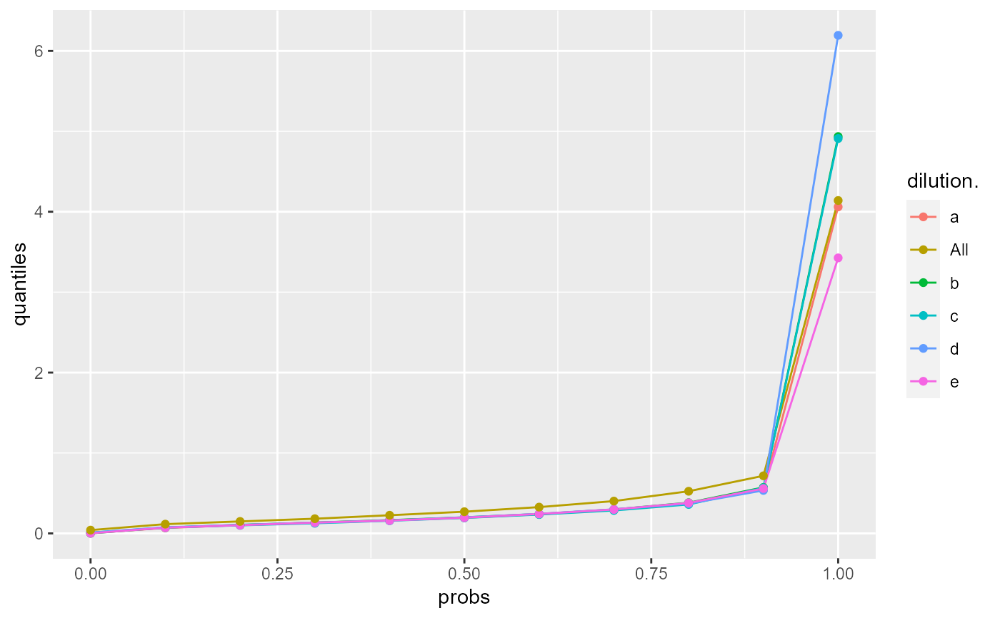

summarize stats output (compute quantiles)
summarize_cv_quantiles( stats_res, config, stats = c("sd", "CV"), probs = c(0.1, 0.25, 0.5, 0.75, 0.9) )
| stats_res | result of running `summarize_cv` |
|---|---|
| config | AnalysisConfiguration |
| stats | summarize either sd or CV |
| probs | for which quantiles 10, 20 etc. |
#>config <- bb1$config$clone( deep = TRUE) data <- bb1$data stats_res <- summarize_cv(data, config) summarize_cv_quantiles(stats_res, config)#> $long #> # A tibble: 30 x 3 #> # Groups: dilution. [6] #> dilution. probs quantiles #> <chr> <dbl> <dbl> #> 1 a 0.1 1238943. #> 2 a 0.25 2401401. #> 3 a 0.5 5128504. #> 4 a 0.75 15058063. #> 5 a 0.9 47610913. #> 6 b 0.1 1207982. #> 7 b 0.25 2212925. #> 8 b 0.5 5188453. #> 9 b 0.75 14320245. #> 10 b 0.9 47873314. #> # ... with 20 more rows #> #> $wide #> # A tibble: 5 x 7 #> probs a All b c d e #> <dbl> <dbl> <dbl> <dbl> <dbl> <dbl> <dbl> #> 1 0.1 1238943. 1565426. 1207982. 1072003. 1191353. 1239760. #> 2 0.25 2401401. 2483120. 2212925. 2040999. 2116310. 2331274. #> 3 0.5 5128504. 5043511. 5188453. 4919957. 4785827. 5018632. #> 4 0.75 15058063. 13774826. 14320245. 14256412. 14254286. 14328837. #> 5 0.9 47610913. 44278351. 47873314. 45552582. 49583057. 49084314. #>summarize_cv_quantiles(stats_res, config, stats = "CV")#> $long #> # A tibble: 30 x 3 #> # Groups: dilution. [6] #> dilution. probs quantiles #> <chr> <dbl> <dbl> #> 1 a 0.1 9.14 #> 2 a 0.25 12.6 #> 3 a 0.5 17.2 #> 4 a 0.75 25.7 #> 5 a 0.9 41.1 #> 6 b 0.1 8.56 #> 7 b 0.25 13.0 #> 8 b 0.5 18.3 #> 9 b 0.75 27.5 #> 10 b 0.9 40.3 #> # ... with 20 more rows #> #> $wide #> # A tibble: 5 x 7 #> probs a All b c d e #> <dbl> <dbl> <dbl> <dbl> <dbl> <dbl> <dbl> #> 1 0.1 9.14 12.9 8.56 7.97 8.60 8.24 #> 2 0.25 12.6 16.0 13.0 12.3 12.2 13.1 #> 3 0.5 17.2 22.3 18.3 18.3 18.3 19.8 #> 4 0.75 25.7 32.9 27.5 27.8 28.8 28.7 #> 5 0.9 41.1 43.7 40.3 43.8 40.8 42.7 #>bb <- LFQService::ionstar$normalized() config <- bb$config$clone(deep = TRUE) data <- bb$data config$table$getWorkIntensity()#> [1] "transformedIntensity"#> $long #> # A tibble: 30 x 3 #> # Groups: dilution. [6] #> dilution. probs quantiles #> <chr> <dbl> <dbl> #> 1 a 0.1 0.0675 #> 2 a 0.25 0.117 #> 3 a 0.5 0.195 #> 4 a 0.75 0.330 #> 5 a 0.9 0.544 #> 6 b 0.1 0.0722 #> 7 b 0.25 0.122 #> 8 b 0.5 0.200 #> 9 b 0.75 0.338 #> 10 b 0.9 0.571 #> # ... with 20 more rows #> #> $wide #> # A tibble: 5 x 7 #> probs a All b c d e #> <dbl> <dbl> <dbl> <dbl> <dbl> <dbl> <dbl> #> 1 0.1 0.0675 0.115 0.0722 0.0728 0.0747 0.0714 #> 2 0.25 0.117 0.165 0.122 0.114 0.119 0.118 #> 3 0.5 0.195 0.270 0.200 0.192 0.199 0.195 #> 4 0.75 0.330 0.460 0.338 0.319 0.330 0.332 #> 5 0.9 0.544 0.716 0.571 0.567 0.534 0.558 #>summarize_cv_quantiles(stats_res, config, stats = "sd")#> $long #> # A tibble: 30 x 3 #> # Groups: dilution. [6] #> dilution. probs quantiles #> <chr> <dbl> <dbl> #> 1 a 0.1 0.0675 #> 2 a 0.25 0.117 #> 3 a 0.5 0.195 #> 4 a 0.75 0.330 #> 5 a 0.9 0.544 #> 6 b 0.1 0.0722 #> 7 b 0.25 0.122 #> 8 b 0.5 0.200 #> 9 b 0.75 0.338 #> 10 b 0.9 0.571 #> # ... with 20 more rows #> #> $wide #> # A tibble: 5 x 7 #> probs a All b c d e #> <dbl> <dbl> <dbl> <dbl> <dbl> <dbl> <dbl> #> 1 0.1 0.0675 0.115 0.0722 0.0728 0.0747 0.0714 #> 2 0.25 0.117 0.165 0.122 0.114 0.119 0.118 #> 3 0.5 0.195 0.270 0.200 0.192 0.199 0.195 #> 4 0.75 0.330 0.460 0.338 0.319 0.330 0.332 #> 5 0.9 0.544 0.716 0.571 0.567 0.534 0.558 #>stats_res <- summarize_cv(data, config) xx <- summarize_cv_quantiles(stats_res, config, probs = seq(0,1,by = 0.1)) ggplot2::ggplot(xx$long, aes(x = probs, y = quantiles, color = dilution.)) + geom_line() + geom_point()